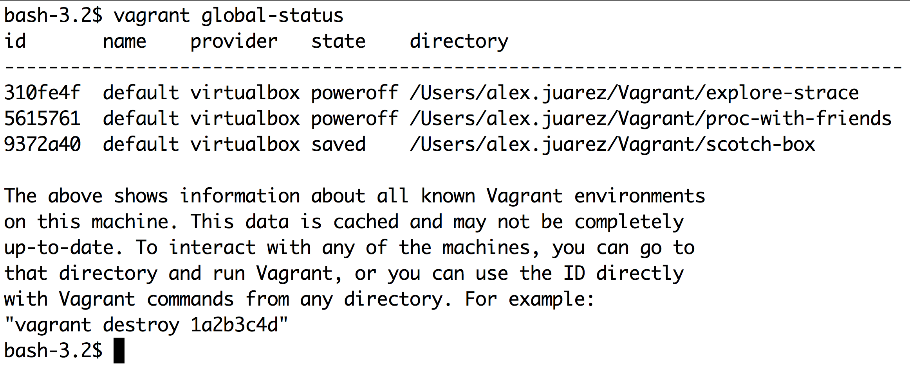
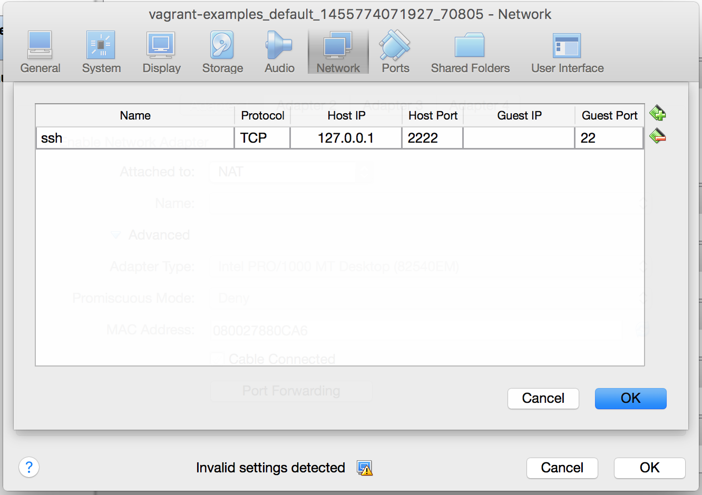
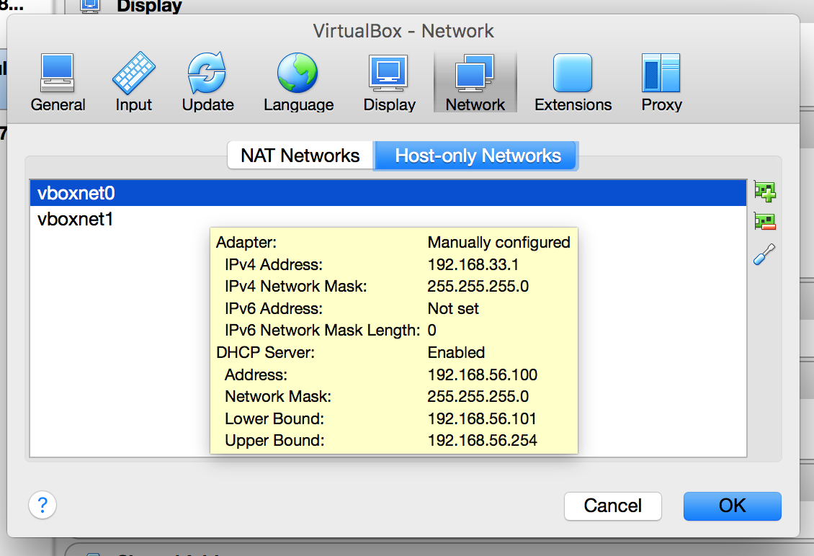
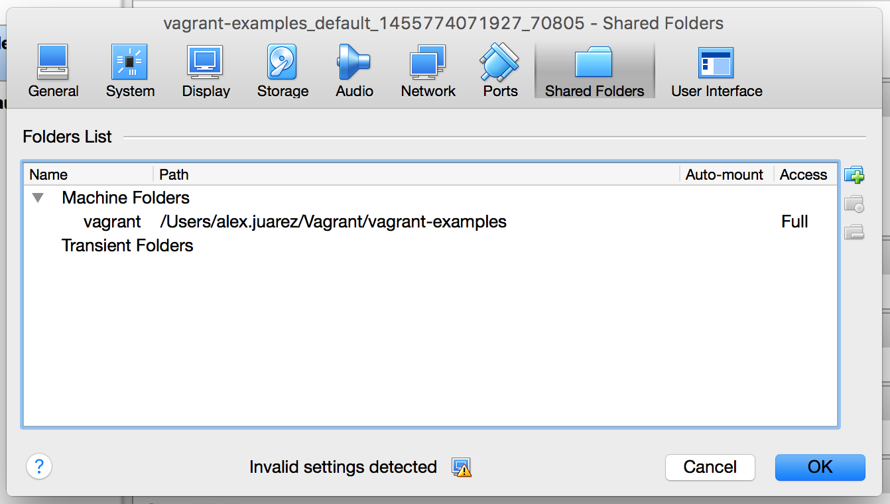

Vagrant
No! We Will Not Do It Live!
Pieced together by Alex Juarez (@mralexjuarez)
But First....
Let's make sure our environment is setup.
# which VMBoxHeadless
# which vagrant
Download Links
Course Outline
- Why this Topic?
- Gotta Get Up (To Get Down)
- Common Terms
- Vagrant Boxes
- A Vagrant Work Flow
-
The Vagrantfile
- Shared Folders
- Networking
- Provisioning
Extended Learning
- Multiple Machines
- Cloud Deployments
So Why this Topic?
So Why this Topic?
- Testing Environments
- Learning new Technologies
So what is Vagrant?
Vagrant lowers the time it takes to setup an virtual environment.
- Vagrant is written Ruby
- Created in 2010 by Mitchell Hashimoto as a side project
- Vagrant 1.0 Released in March of 2012
- Currently at version 1.8.1
More Info @ http://www.vagrantup.com/
Gotta Get Up (To Get Down)
Get Down to Work that Is
Project Directories
Vagrant works out of project directories. Their configuration files are held under the .vagrant directory.
Up and Running
- # mkdir ~/vagrant-boxes
- # mkir ~/vms
- # vagrant box add trusty ~/vagrant-boxes/ubuntu1404.box
- # cd ~/vms
- # vagrant init trusty
- # vagrant up
- # vagrant ssh
Vagrant Setup
That's It!
Do work.
Common Terms
Provider, Boxes, Vagrantfile
Provider
This is the type of VM we build out. We can build out Virtualbox, VMWare, Hyper-V Azure, Rackspace Cloud, AWS. It is essentially the the API we are speaking to.
Boxes
Boxes are the package format for Vagrant environments. This can be a pre-installed OS or a package that contains meta information for a cloud provider.
Vagrantfile
This is Vagrant's configuration file. It describes how to configure and provision an environment.
Vagrant Boxes
(No Witty Sub-title Sorry)
Vagrant Boxes
Simply put they are provider specific server images. They contain an already-intsalled OS.
Boxes can be downloaded from
Listing Vagrant's boxes
# vagrant box listAdding a Vagrant Box
# vagrant box add ubuntu/trusty64
# vagrant box add {BOX-NAME} {URL}Removing a Vagrant Box
# vagrant box remove trusty64
# vagrant box remove {BOX-NAME}Managing Box Versions
Versioned boxes can be managed through the update and outdated sub-commands.
# vagrant box update
# vagrant box outdatedA Vagrant Work Flow
Common Vagrant Commands
# vagrant up
- Create a Virtual machine based the Vagrantfile
- Modify RAM, CPUs
- Configure network interfaces so you can access the VM
- Set up shared folders so you can edit files locally
- Boots the VM
- Sets the VM hostname
- Provisions software
- Perform any host and guest specific tweaks for a machine
# vagrant halt
This command shuts down the running machine.
- First tries the shutdown command
- If shutdown fails, the "power button" is pressed.
All disk resources are still allocated on the host machine
# vagrant destroy
This command effectively destroys the guest machine removing the hard disk image
- Lose all changes since bringing up the machine
- Files in the locally shared directory will remain intact
# vagrant reload
This command is used to shut-down the guest machine and re-configure it based off the Vagrantfile
Some examples of usage
- Reconfiguring network settings
- Reconfiguring shared folders
- Reconfiguring VM resources
# vagrant provision
Runs configured provisioners against the machine. Useful when working on scripts and need to check the progress by re-running the script.
# vagrant global-status
The Vagrantfile
Vagrant's Configuration File
Vagrantfile
This file describes how to build and configure machine(s) in your environment. It defines the box to use, networking, shared folders VM settings and provisioners.
A Vagrantfile is created as follows:
$ vagrant init ubuntu/xenial64
Additional Assets
Under the assets directory there are example Vagrantfiles
Setting the Box to use
config.vm.box = "centos7"
config.vm.hostname = "server"
Networking
- Forwarded ports allows access to a port on the host machine and have all traffic forwarded to a port on the guest machine.
- Port 22 enabled, but must be enabled for any other ports
- Can add locally accessible IPs
Port 8080 will be forwarded to the guest machine on port 80
Vagrant.configure("2") do |config|
config.vm.network "private_network", ip: "192.168.33.10"
config.vm.network "forwarded_port", guest: 80, host: 8080
end
Port Forwarding
Private Networks
Shared Folders
By default your project folder is shared with the guest machine under /vagrant. This allows the user to work on the host machine and have it the content available on the guest machine.
Shared Folders Example
Provisioning
You can use shell scripts and configuration management tools such as Chef, Puppet, and Ansible.
Our examples will introduce the file and shell provisioners as they are the most readily available.
File Provisioner
The file provisioner copies files from a specified source to a specified destination
Vagrant.configure("2") do |config|
# ... other configuration
config.vm.provision "file" , source: "./vimrc", destination: "/tmp/vimrc"
end
Shell (inline) Provisioner
The shell provisioner, when used with the inline option, runs a command right on the guest machine. This is good for single commands such as copying files in to place, or updating your system.
Vagrant.configure("2") do |config|
# ... other configuration
config.vm.provision "shell", inline: "yum -y update"
end
Shell (path) Provisioner
The shell provisioner, when used with path option, can be used run either a local or remote script.
Vagrant.configure("2") do |config|
# ... other configuration
config.vm.provision "shell", path: "./adduser.sh"
config.vm.provision "shell", path: "https://setup.ius.io/"
end
Chef and Ansible Examples
Example of using Chef Solo as a provisioner
Vagrant.configure("2") do |config|
# ... other configuration
Vagrant.configure("2") do |config|
config.vm.provision "chef_solo" do |chef|
chef.add_recipe "apache"
end
end
Ansible
Vagrant.configure("2") do |config|
config.vm.provision "ansible" do |ansible|
ansible.playbook = "playbook.yml"
end
end
Multi-Machine
One Machine does not an environment make
Multi-Machine
Vagrant can be used to provision, configure and control multiple machines
Example use cases
- Separate a web and database server
- Create an multi-tier environment
- Testing an API interface
Multi-Machine
Multiple machines can be configured, provisioned and deployed all from the same Vagrant file.
Vagrant.configure("2") do |config|
# Box 1 - Web Server
config.vm.define "web" do |web|
web.vm.box = "apache"
end
# Box 2 - Database Server
config.vm.define "db" do |db|
db.vm.box = "mysql"
end
end
Multi-Machine
There are a number of a example files under the assets directory.
Cloud Deployment
Cloud Deployment
In this section we talk about two Vagrant plugins that will help us deploy cloud servers in Rackspace and AWS environments.
Vagrant Plugins
Installing the vagrant-rackspace plugin
# vagrant plugin install vagrant-rackspace
Installing the vagrant-aws plugin
# vagrant plugin install vagrant-aws
Vagrant Plugins
Verify you have the new plug-ins installed
# vagrant plugin list
Vagrant & Rackspace Cloud
You will need:
- Username / API Key
- Region
- Flavor (e.g. 1GB Performance)
# vagrant rackspace flavors - Image (e.g. Ubuntu)
# vagrant rackspace images list - Vagrant Rackspace "Dummy" box # vagrant box add rs-box https://github.com/mitchellh/vagrant-rackspace/raw/master/dummy.box
Vagrant & Rackspace Cloud
Vagrant.configure(2) do |config|
# The box is optional in newer versions of Vagrant
# config.vm.box = rs-box
config.ssh.private_key_path = ENV['MY_PRIVATE_KEY']
config.vm.provider :rackspace do |rs|
rs.username = ENV['RS_USERNAME']
rs.api_key = ENV['RS_API_KEY']
rs.rackspace_region = ENV['RS_REGION']
rs.public_key_path = ENV['MY_PUBLIC_KEY']
rs.flavor = /1 GB Performance/
rs.image = /Ubuntu/
end
end
Vagrant & Rackspace Cloud
Append this to ~/.bashrc
# Exported Variables for Rackspace Cloud export RS_USERNAME="RACKSPACE_USERNAME" export RS_REGION="RACKSPACE_REGION" export RS_API_KEY="RACKSPACE_API_KEY" export RS_NETWORK="RACKSPACE_NETWORK" export MY_PUBLIC_KEY="~/.ssh/id_rsa.pub" export MY_PRIVATE_KEY="~/.ssh/id_rsa"
# source ~/.bashrc
Vagrant & Rackspace Cloud
$ vagrant up --provider=rackspace
In Closing...
Contact Information
This hCard created with the hCard creator.
A short bio
Alex Juarez is a Principal Engineer at Rackspace, touting 8 years with the company. Alex enjoys all things Linux, especially training and mentoring others, and is incredibly qualified to do so as an RHCA/RHCI. When Alex isn't helping others he's crafting killer cocktails and finding the best spots to grub in San Antonio.
Thanks @jilljubsSession Survey
http://goo.gl/forms/4JJnVJVr3TQ & A
(Or we can talk about Whiskey)